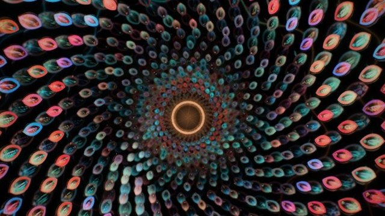
MUMM3
by Stoned Ape / Psychonautica · AGPL-3.0-or-later
Neon chrysanthemum funnel
30 scenes for the Psychonautica Visualizer. Open one in the visualizer, or download its scene pack and add it to your own copy with Scenes > Edit > "+ Scene".
Want to make one? Here is how. A scene pack is code: only add packs from people you trust.

Neon chrysanthemum funnel
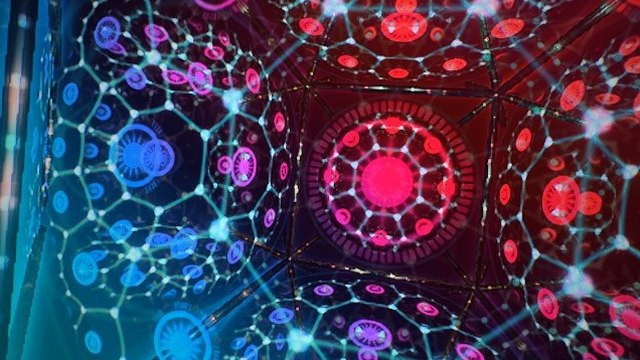
Hyperbolic LED honeycombs
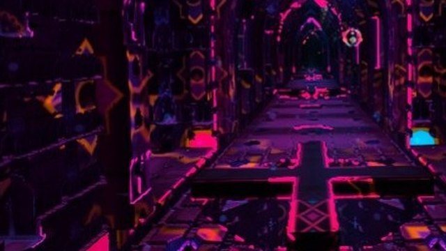
Machine elves and recursive vaults
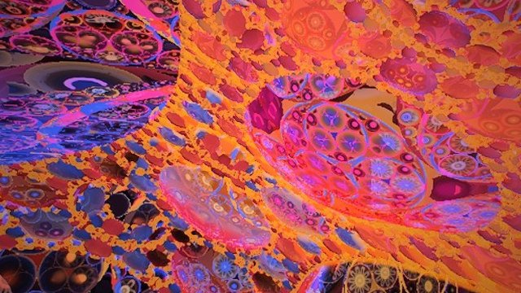
Porous fractal chambers
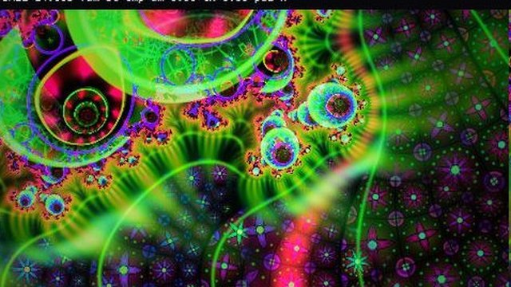
Living jewelled mandala
Endless stained-glass cathedral
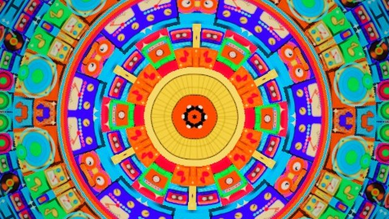
Kawaii sound-system wall: every band lights its own tiles like a giant level meter, a shockwave runs out on every kick, everyone hops on the snare, mouths sing the vocals
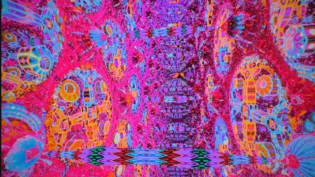
Kleinian curl architecture
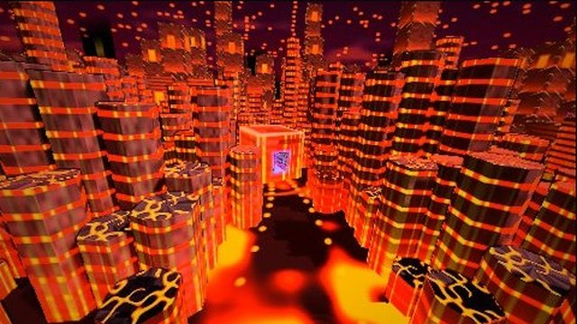
An endless dive through boxes, and each box opens onto a truly different world: a castle at sunset, a neon city, a giant toadstool forest, a clockwork yard of meshing gears, a crystal valley under an aurora, a candy land, a moon base, a pagoda village, a desert of pyramids, the Rubik towers, a circuit-board megacity, a basalt field in lava, a coral reef, a library of giant books, sky islands above the clouds, and a snow forest; the bass swells every structure, the kick sends a hop and a ring of light, the mids fill the windows and lanterns, the highs light stars and rims, and pulled right out the camera arcs high over each world and still dives through the next door
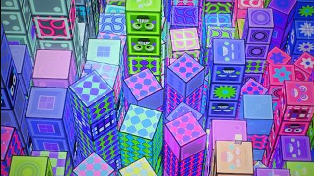
Bold cubes dancing in formation
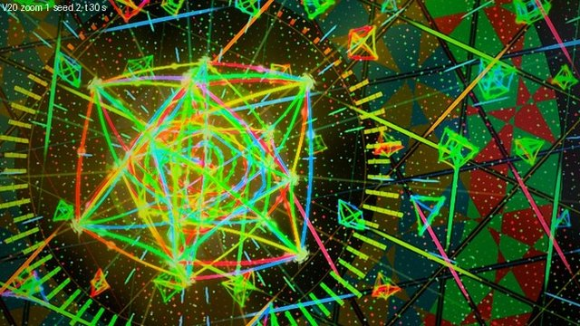
Neon four-dimensional wireframes
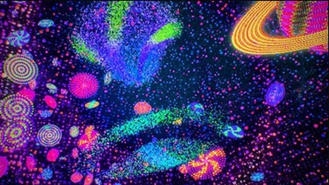
A murmuration of light: sculptures of countless dots that orbit, weave and chase each other among ringed worlds
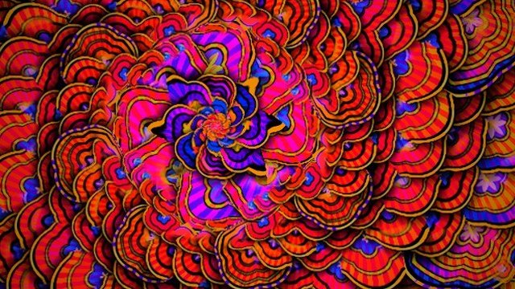
Living plumage of enamel scales pouring through whorls of pure colour
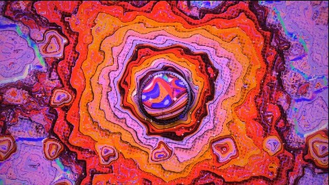
Liquid screenprint contour fields
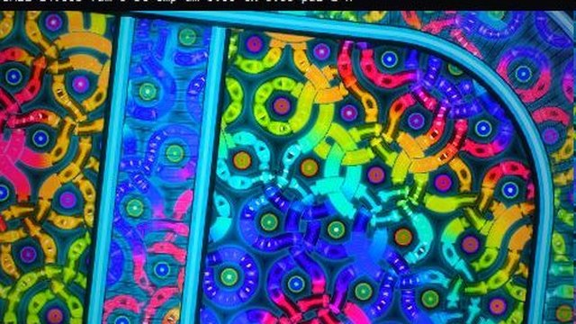
Living neon Truchet knotwork
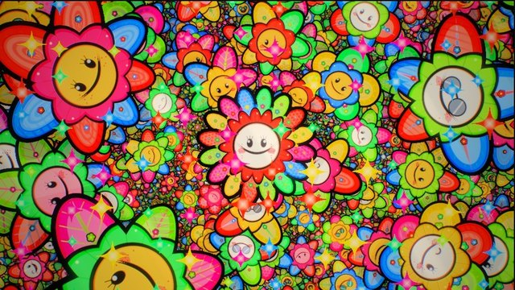
Superflat flower power
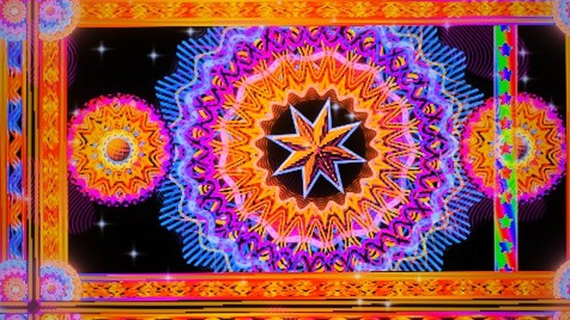
An engraved neon banknote sheet
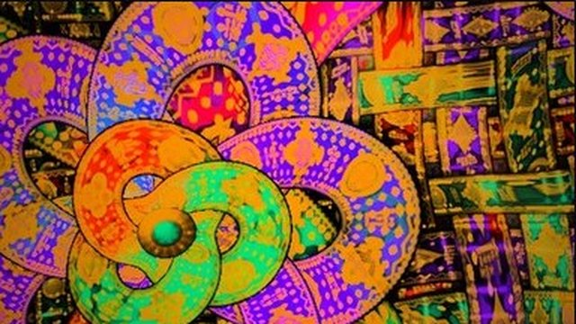
Satin ribbons weave and reweave
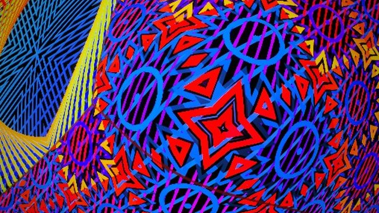
Neon op-art lens illusions
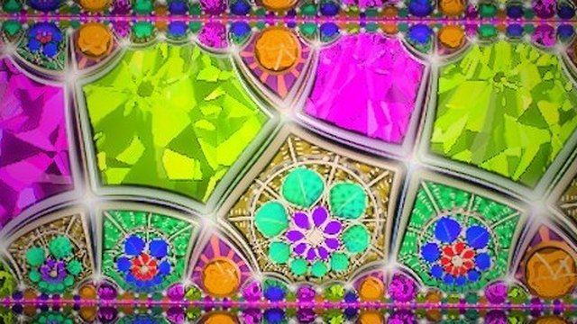
Hyperbolic jewel tilings
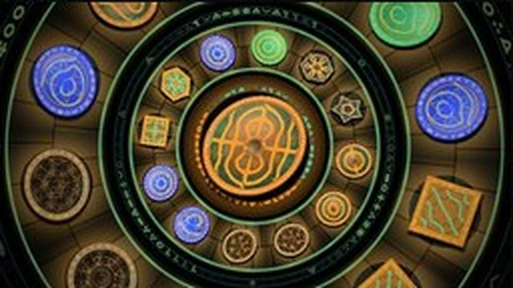
A temple of singing sand, crossed by travelling sound waves
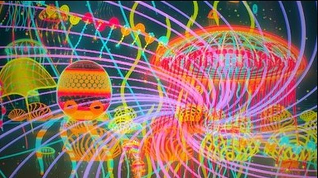
A leviathan jellyfish wider than the frame over a court of spiralling jellies; drops plunge the camera between twilight, lightless midnight and a vent garden
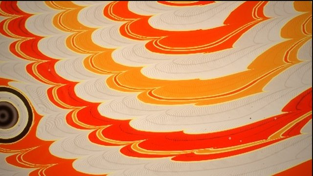
Liquid marbling played live
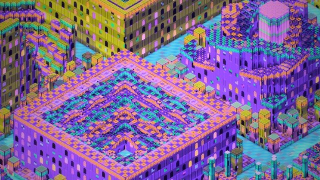
Living temple city: terraces, screws and pistons that move to the music
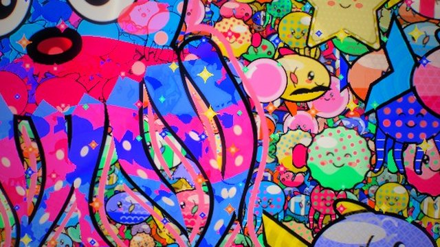
Superflat singing sea
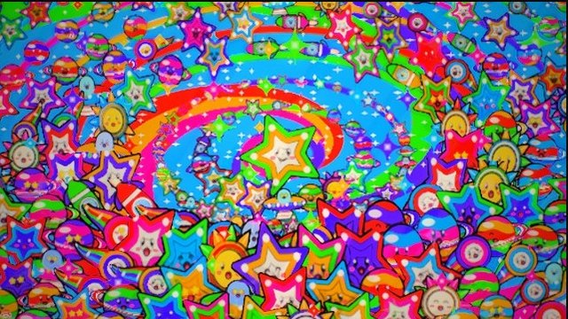
Superflat smiling cosmos
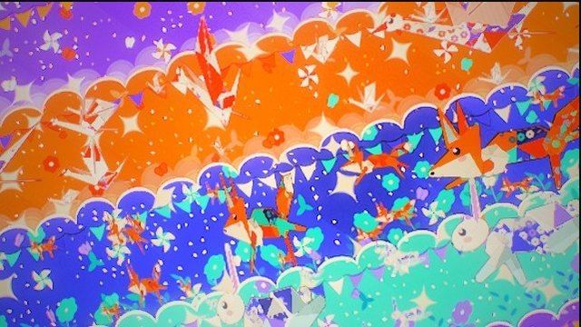
Origami animal procession
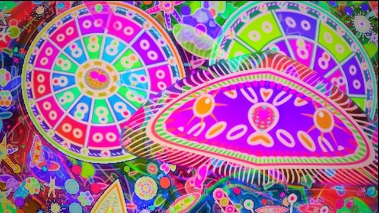
Psychedelic living microscope slide
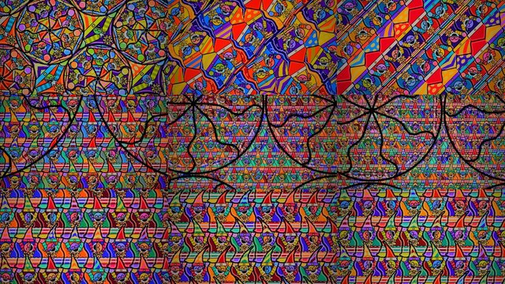
The machine elf overlay: interlocking clockwork elves, laughing
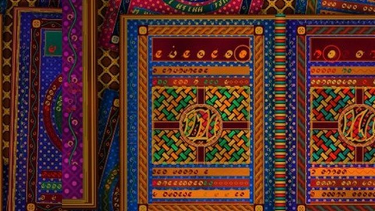
An illuminated book the size of a cathedral floor, in a script nobody can read, written stroke by stroke by the music